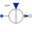

SourcesMultiphase voltage and current sources |
|
Package Contents
|
Multiphase signal voltage source |
|
|
Multiphase constant voltage source |
|
|
Multiphase sine voltage source |
|
|
Multiphase cosine voltage source |
|
|  |
Multiphase signal current source |
|
Multiphase constant current source |
|
|
Multiphase sine current source |
|
|
Multiphase cosine current source |
Information
This information is part of the Modelica Standard Library maintained by the Modelica Association.
This package contains time-dependent and controlled multiphase voltage and current sources:
- SignalVoltage: fed by Modelica.Blocks.Sources arbitrary waveforms of voltages are possible
- ConstantVoltage: constant multi phase voltages
- SineVoltage : phase shift between consecutive voltages by default given by symmetricOrientation
- CosineVoltage : phase shift between consecutive voltages by default given by symmetricOrientation
- SignalCurrent: fed by Modelica.Blocks.Sources arbitrary waveforms of currents are possible
- ConstantCurrent: constant multi phase currents
- SineCurrent : phase shift between consecutive currents by default given by symmetricOrientation
- CosineCurrent : phase shift between consecutive currents by default given by symmetricOrientation